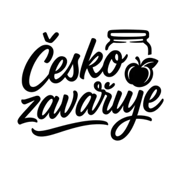

Moje Projekty
Ukázky mé práce na reálných projektech. Od návrhu designu přes vývoj až po nasazení a analytiku.

Česko Zavařuje
Komplexní "freelance" projekt zaměřený na digitalizaci hobby segmentu (zavařování).
www.ceskozavaruje.czKlíčové funkce a řešení
Smart Calculator Logic
Vývoj vlastní matematické logiky pro přepočet ingrediencí (voda, ocet, sůl, cukr) na základě vstupní váhy suroviny. Podpora 3 různých metod (Zavařování, Nakládání, Džemy) s validací vstupů.
UX & Mobile-First Design
Návrh a implementace plně responzivního designu s důrazem na mobilní použití. Interaktivní prvky jako Parallax efekty, sticky CTA a animované karty pro plynulý zážitek.
Data-Driven Development
Implementace pokročilého měření (Event Tracking) – sledování nejen návštěvnosti, ale i chování uživatelů v kalkulačce (např. jaké ovoce nejčastěji počítají) pro budoucí optimalizace.
SEO & Legal & Backend-less
Kompletní on-page SEO, sitemap, robots.txt. Implementace GDPR Consent Mode. Integrace newsletter formuláře napojeného na Google Sheets (Backend-less řešení).
Technologie
- Frontend Astro (statický generátor), TypeScript
- Styling Tailwind CSS
- Analytics GA4 (Custom Events), CookieYes
- Deploy Vercel, Wedos DNS
Nový web z nuly na tisíce návštěvníků z Googlu za dva měsíce. Bez jediné koruny za reklamu.
za 70 dní, od 1. 6. do 9. 8. 2026
Čísla ze Search Console
Všechny údaje platí k srpnu 2026. Web běží od června 2026, spuštěný od nuly.
Během několika týdnů se web dostal na první stranu Googlu, na pozice 3 až 5, na konkurenční dotazy typu „jak zavařit třešně“, „jak zavařit višně“ nebo „jak zavařit rybíz“.
K sezónnosti
Je to sezónní projekt. Vrchol přichází v létě, kdy se zavařuje, a v zimě čísla klesnou. Tak to u zavařování prostě chodí. Podstatné je, že se nový web dostal před tisíce lidí za dva měsíce a bez rozpočtu na reklamu.
Pojďme spolupracovat
Káva osobně, nebo přes Google Meet? Výběr je na vás. Hlavní je probrat váš projekt a nastavit cestu k dlouhodobým výsledkům.